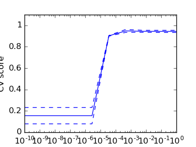

模型选择：选择 estimators 及其参数¶
得分，和 交叉验证得分¶
正如我们所看到的那样, 每一个estimator暴露一个计算estimator在测试数据上的测试得分的方法： score
得分越大，estimator对数据的拟合模型越好。
.
>>> from sklearn import datasets, svm
>>> digits = datasets.load_digits()
>>> X_digits = digits.data
>>> y_digits = digits.target
>>> svc = svm.SVC(C=1, kernel='linear')
>>> svc.fit(X_digits[:-100], y_digits[:-100]).score(X_digits[-100:], y_digits[-100:])
0.97999999999999998
为了更好的测量预测精度（该预测精度可被用于衡量模型拟合的好坏），我们可以连续的把数据集拆分成 folds 用于训练和测试：
>>> import numpy as np
>>> X_folds = np.array_split(X_digits, 3)
>>> y_folds = np.array_split(y_digits, 3)
>>> scores = list()
>>> for k in range(3):
... # We use 'list' to copy, in order to 'pop' later on
... X_train = list(X_folds)
... X_test = X_train.pop(k)
... X_train = np.concatenate(X_train)
... y_train = list(y_folds)
... y_test = y_train.pop(k)
... y_train = np.concatenate(y_train)
... scores.append(svc.fit(X_train, y_train).score(X_test, y_test))
>>> print(scores)
[0.93489148580968284, 0.95659432387312182, 0.93989983305509184]
这被称之为 KFold 交叉验证
交叉验证生成器¶
上面的把数据分割成训练集和测试集代码写起来是很繁琐的。 Scikit-learn 暴露了交叉验证生成器 (cross-validation generators)去产生一个 索引列表来达到数据分割的目的:
>>> from sklearn import cross_validation
>>> k_fold = cross_validation.KFold(n=6, n_folds=3)
>>> for train_indices, test_indices in k_fold:
... print('Train: %s | test: %s' % (train_indices, test_indices))
Train: [2 3 4 5] | test: [0 1]
Train: [0 1 4 5] | test: [2 3]
Train: [0 1 2 3] | test: [4 5]
基于交叉验证生成器，交叉验证的实现将会变得非常简单轻松：
>>> kfold = cross_validation.KFold(len(X_digits), n_folds=3)
>>> [svc.fit(X_digits[train], y_digits[train]).score(X_digits[test], y_digits[test])
... for train, test in kfold]
[0.93489148580968284, 0.95659432387312182, 0.93989983305509184]
为了计算一个estimator的score 方法的值，
sklearn 暴露了一个辅助性的方法:
>>> cross_validation.cross_val_score(svc, X_digits, y_digits, cv=kfold, n_jobs=-1)
array([ 0.93489149, 0.95659432, 0.93989983])
n_jobs=-1 意味着交叉验证计算将会被分发给该计算机上的所有CPU.
交叉验证生成器
KFold (n, k) |
StratifiedKFold (y, k) |
LeaveOneOut (n) |
LeaveOneLabelOut (labels) |
| Split it K folds, train on K-1 and then test on left-out | It preserves the class ratios / label distribution within each fold. | Leave one observation out | Takes a label array to group observations |
练习

在 digits dataset 上,绘制 SVC estimator 的交叉验证得分 ，选择线性核函数，参数C
的值从1到10 的对数网格中选择。
import numpy as np
from sklearn import cross_validation, datasets, svm
digits = datasets.load_digits()
X = digits.data
y = digits.target
svc = svm.SVC(kernel='linear')
C_s = np.logspace(-10, 0, 10)
网格搜索 与 交叉验证estimators¶
网格搜索(Grid-search)¶
sklearn 提供了一个对象 GridSearchCV。只要给定数据，该对象就会计算estimator在一个参数网格上拟合过程中的得分，而且会 自动选择使得交叉验证得分最大的一组参数。该对象的构造函数需要一个estimator对象的实例和一个参数网格，而且向外部暴露了 一个 estimator API.
>>> from sklearn.grid_search import GridSearchCV
>>> Cs = np.logspace(-6, -1, 10)
>>> clf = GridSearchCV(estimator=svc, param_grid=dict(C=Cs),
... n_jobs=-1)
>>> clf.fit(X_digits[:1000], y_digits[:1000])
GridSearchCV(cv=None,...
>>> clf.best_score_
0.925...
>>> clf.best_estimator_.C
0.0077...
>>> # Prediction performance on test set is not as good as on train set
>>> clf.score(X_digits[1000:], y_digits[1000:])
0.943...
默认情况下, GridSearchCV对象
使用3-fold交叉验证. 然而,如果它检测到传入的estimator对象实例是一个分类器而不是回归器，将会使用分层(stratified) 3-fold.
嵌套的交叉验证
>>> cross_validation.cross_val_score(clf, X_digits, y_digits)
...
array([ 0.938..., 0.963..., 0.944...])
两个交叉验证循环将会被并行执行：一个线程由GridSearchCV estimator 来设置参数 gamma
而另一个线程由cross_val_score来测量estimator的预测性能
。计算所得的分数是在新数据上预测得分的无偏估计。
警告：
你不能将本身带有并行计算的对象嵌套进去(n_jobs 不等于 1 的对象不能嵌套).
交叉验证的estimators对象¶
使用交叉验证设置参数可以基于算法的算法有效的进行。这就是为什么对某些estimator对象， sklearn 向外部提供一个Cross-validation: evaluating estimator performance 后面带有“CV”字样的对象，它可以根据交叉验证自动设置参数。
>>> from sklearn import linear_model, datasets
>>> lasso = linear_model.LassoCV()
>>> diabetes = datasets.load_diabetes()
>>> X_diabetes = diabetes.data
>>> y_diabetes = diabetes.target
>>> lasso.fit(X_diabetes, y_diabetes)
LassoCV(alphas=None, copy_X=True, cv=None, eps=0.001, fit_intercept=True,
max_iter=1000, n_alphas=100, n_jobs=1, normalize=False, positive=False,
precompute='auto', random_state=None, selection='cyclic', tol=0.0001,
verbose=False)
>>> # The estimator chose automatically its lambda:
>>> lasso.alpha_
0.01229...
这些estimator对象以与他们对应的调用相似的方式被调用，不同的是他们的名字后面要加上“CV”.
练习题
在糖尿病数据集(diabetes dataset), 找到一个最优的正则化参数 alpha.
Bonus: How much can you trust the selection of alpha?
from sklearn import cross_validation, datasets, linear_model
diabetes = datasets.load_diabetes()
X = diabetes.data[:150]
y = diabetes.target[:150]
lasso = linear_model.Lasso()
alphas = np.logspace(-4, -.5, 30)